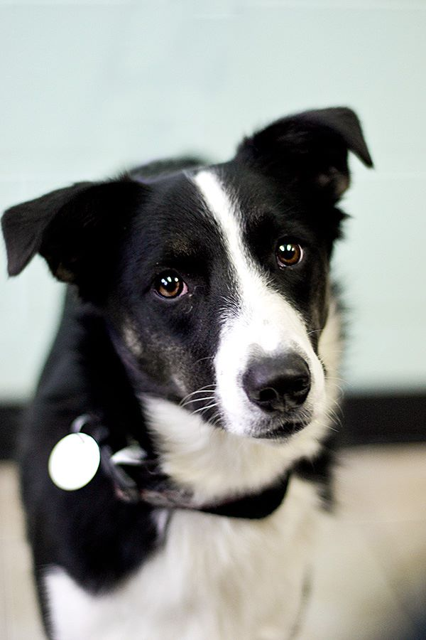
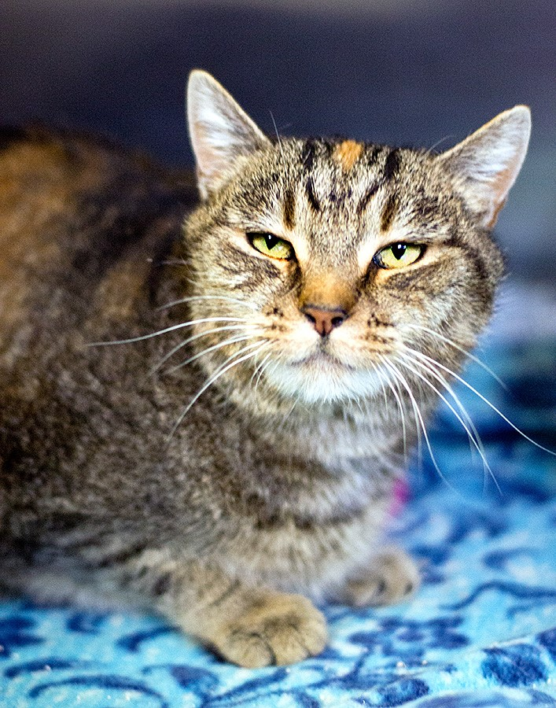
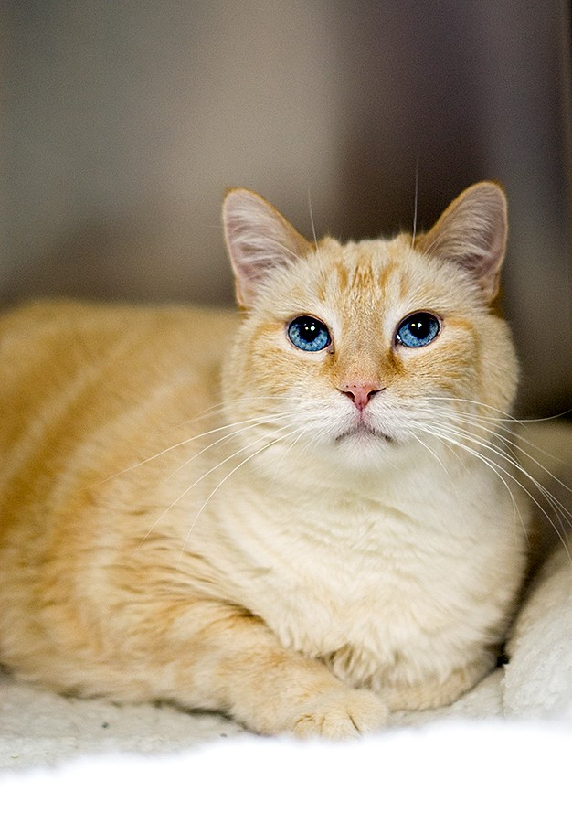
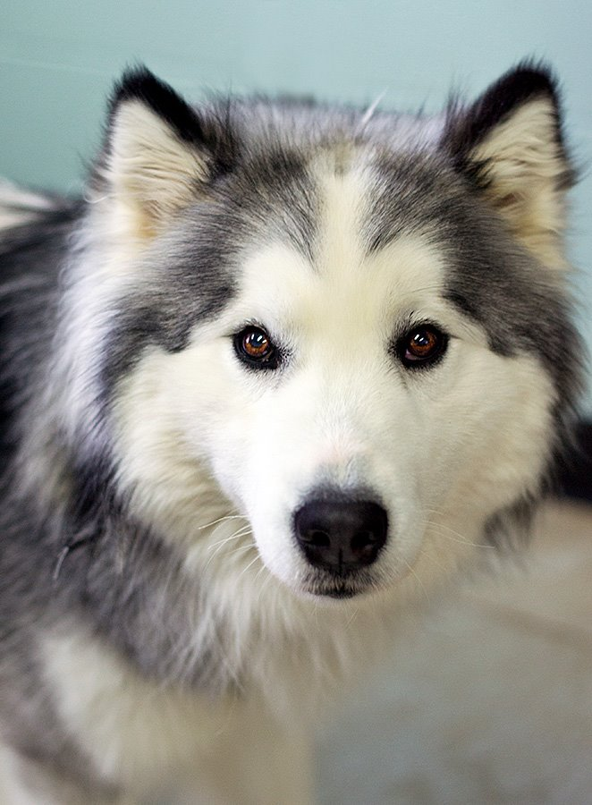

Adopt One of Our Furry Friends!
 
We have many great animals up for adoption! Pictured to the left are:
Kira the border collie mix. She loves to play with toys and herd anything and everything!
Sophia the torbie cat. She's an elegant lady and doesn't have time for shenanigans.
Christopher the flame point cat. He's a big teddy bear and weighs in at 17 lbs. He'd love to be your personal weighted blanket for your lap.
Teddy the husky mix. He is an outgoing friend who loves to run and chase blades of grass when you mow the lawn.